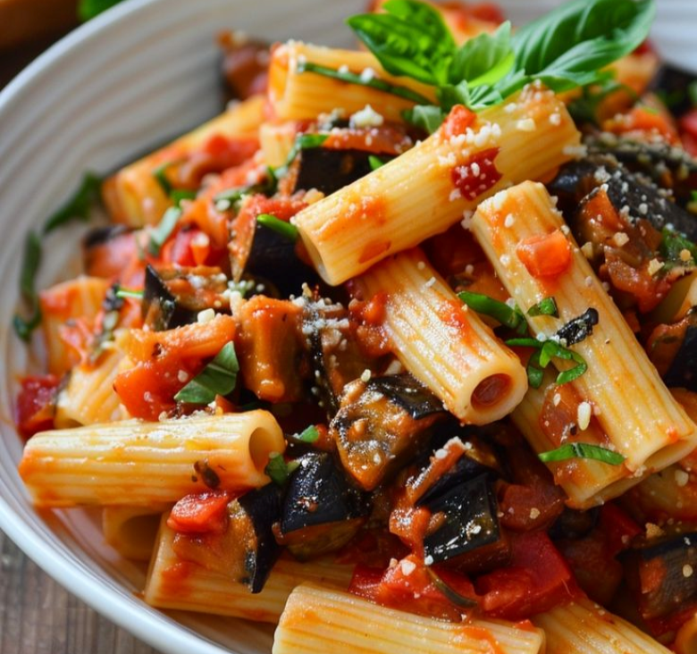
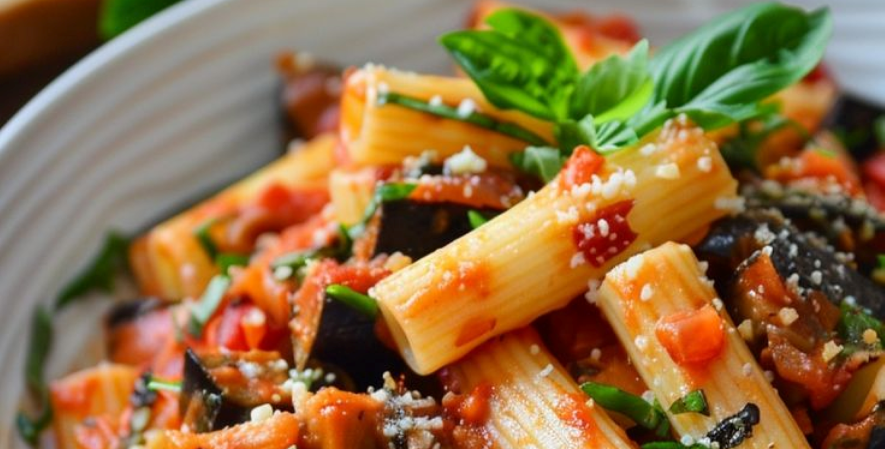

Primi piatti
Rigatoni alla norma:
- Sedani rigati
- 500g di melanzane (violetta di vittoria)
- 1 ricotta di pecora (salata, siciliana)
- Sale fino q.b
- Pomodori costoluti (varietà catanese, maturi)
- 4 spicchi d'Aglio
- Basilico 1 mazzetto


Procedimento:
- Per preparare la pasta alla norma come prima cosa lavate e asciugate bene la melanzana, spuntatela. Tagliatela a fette di circa 8 mm 2 e trasferitele in uno scolapasta.
- Cospargetele con il sale e lasciate spurgare per almeno 15 minuti. Nel frattempo occupatevi dei pomodori: lavateli eliminando il picciolo. Tagliateli a metà.
- Trasferite in un tegame con un pizzico di sale, 3 spicchi d'aglio (potete anche ridurre se non lo preferite, ma caratterizza la pasta alla Norma) e un mazzetto di basilico.
- Lasciate cuocere per 30 minuti senza aggiungere nulla a fiamma bassa, i pomodori rilasceranno la loro acqua. Trascorsi i 30 minuti eliminate aglio e basilico. Trasferite i pomodori in un passaverdure a maglia finissima e passateli.
- Una volta che avrete ottenuto la vostra passata trasferite in una padella, unite ancora uno spicchio d'aglio 14 e un rametto di basilico. Lasciate cuocere altri 40 minuti, mescolando di tanto in tanto.
- Potete sciacquare bene le melanzane, tamponarle con carta da cucina. Poi versate l'olio extravergine in una pentola dai bordi alti e portatelo ad una temperatura di circa 170-180°°. Immergete poche melanzane per volta nell'olio e giratele di tanto in tanto. Ci vorranno alcuni minuti perchè risultino ben dorate. A questo punto scolatele con una pinza e trasferitele su un vassoio foderato con carta da cucina. Continuate a friggere le melanzane e nel frattempo ponete sul fuoco una pentola colma d'acqua, che servirà per la cottura della pasta.
- Quando il sugo sarà piuttosto denso, eliminate il basilico, aggiungete un cucchiaio dell'olio della frittura delle melanzane e un filo d'olio a crudo
- Cuocete la pasta al dente, scolatela e trasferitela nel sugo. Saltate velocemente per condire.
- Trasferite la pasta nei piatti, aggiungete le melanzane fritte, abbondante grattugiata di ricotta di pecora salata, una fogliolina di basilco e servite la vostra pasta alla Norma!